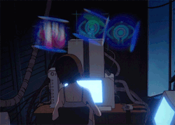

Top Assignments
- Restaurant Web Page
- Storybook Website
- Bluebird Music Studio
- Trivia Game
Shop Goals
- Integrate more Android Studio tasks into our Java courses
- Create curriculum guides for all courses
- Redesign the Old Colony Website
- Become a Scrum Master
Web Vocabulary
- Algorithm
- A detailed list of steps to accomplish a task
- Abstraction
- Reduces information and detail to faciliate focus on relevant concepts.
- Event-driven Programming
- A programming approach whereby the program's behavior is controlled by writing code that responds to various events that occur, such as button clicks
- Computational Artifact
- An object created by a human being that involves the use of computation, such as a spreadsheet, application, or webpage